★ 跟练模式（GIF 动画 · 倒计时自动切换）
- 这几套序列适合久坐引起的轻度腰背、肩颈酸痛，不能代替医生诊断。
- 拉伸到“有拉伸感、最多轻微不适”为止，不要拉到疼。「颈椎·肩颈」和「工位久坐」最后都带一个练中背的动作，没有弹力带就空手做，别跳过。
- 酸痛明显的日子先做「腰背舒缓」和「睡前放松」，缓解后再加「全身唤醒」。
- 出现以下任一情况立即停止并就医：疼痛达到 5/10 及以上；手或腿发麻、有放射痛；夜里痛醒；头晕或胸闷。完整清单见「安全边界」一节。
点「开始跟练」会弹出播放器：先显示准备提示，然后播放动作动画（可切换为分步图），倒计时结束后自动进入下一个动作。手机上点「全屏」，可以边看边做。
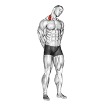
- 坐直，脚踩地，肩放松 — 10秒 · 坐骨坐稳、下巴微收，先深呼吸两次
- 颈侧拉伸（左右各做） — 30秒（左右各一次） · 耳朵找肩膀；出现手麻/头晕立刻停
- 颈侧轻加压（左右各做） — 30秒（左右各一次） · 手只做轻微加压，最多轻微不适，不要拉到疼
- 坐姿单臂上举侧伸展（左右各做） — 30秒（左右各一次） · 手臂贴近耳朵，别耸肩、别前倾
- 胸前/前肩拉伸 — 30秒 · 双臂交叉前推，肩胛轻轻向后收
- 前臂腕部拉伸（左右各做） — 25秒（左右各一次） · 手臂伸直，手掌轻拉，不痛为界
- Y 字上举（中下斜方） — 35秒（约 10 次） · 没弹力带就空手；拇指朝上，别耸肩
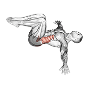
- 仰卧，双膝屈曲，脚踩地 — 10秒 · 腰下轻贴地，做两次慢呼吸
- 仰卧屈膝转体（左右各做） — 45秒（左右各一次） · 膝只转到不痛的那一半，慢慢落
- 仰卧腿后侧拉伸 — 35秒（左右各一次） · 臀不离地，拉到“紧而不痛”
- 臀桥 — 40秒（约 12 次） · 先在臀部收紧，再抬骨盆；腰不顶
- 死虫 — 40秒（约 6 次） · 腰贴地，腿伸到腰要离地就回
- 坐姿臀部拉伸（收尾，需坐地） — 50秒（左右各一次） · 坐直，胸骨向前；不能坐地就用 C11 代替
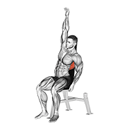
- 站起来，双脚与髋同宽 — 10秒 · 膝微屈，肋骨收一点，别塌腰
- 坐姿/站姿单臂上举侧伸展（左右各做） — 30秒（左右各一次） · 手臂贴耳朵向上，身体只向侧面倒
- 扶桌屈髋下压（背阔/胸椎） — 30秒 · 髋向后坐，背拉长；不追求压得很低
- 扶桌单腿髋伸展（收臀） — 40秒（约 12 次） · 扶稳桌沿，腿向后、臀夹紧；腰不塌，不用腰顶
- 反向飞鸟（中背激活） — 35秒（约 12 次） · 空手也行：肩胛向后夹，别耸肩
- 前臂腕部拉伸（左右各做） — 25秒（左右各一次） · 键盘手必做，手臂伸直再拉
- 颈侧拉伸 — 30秒（左右各一次） · 最后收尾，慢慢呼吸
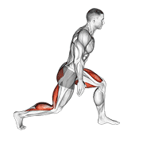
- 站立，双手上举伸展一次 — 10秒 · 站直，深呼吸，感受起身
- 世界最伟大拉伸（左右各做） — 40秒（左右各一次） · 后腿塌就写不下去时，手撑椅子
- 扶物屈髋下压背阔 — 40秒 · 髋向后，胸向下，别弓腰硬压
- 臀桥行进 — 40秒（约 6 次） · 骨盆保持水平，慢慢交替抬脚
- 弹力带划船（左右/双侧） — 40秒（每侧约 12 次） · 无带：改用墙角划船或 S03
- 肩胛俯卧撑 — 40秒（约 12 次） · 只动肩胛，手肘不弯
- 膝跪股四头肌拉伸 — 40秒（左右各一次） · 尾骨微收，腰不塌
- 胸小肌/前肩拉伸 — 30秒（左右各一次） · 胸前打开，肩不下压
- 颈侧拉伸 — 30秒（左右各一次） · 轻轻的，不猛拉
- 躺下，膝盖垫个枕头 — 15秒 · 做 3 次“吸 4 秒 呼 6 秒”的呼吸
- 仰卧屈膝转体（左右各做） — 60秒（左右各一次） · 呼气时膝盖落，吸气回正
- 仰卧腿后侧拉伸 — 40秒（左右各一次） · 用毛巾勾脚，腿抬到有拉伸感
- 臀桥（晚上做轻的） — 35秒（约 10 次） · 不急，慢慢起慢慢落
- 抱膝到下背（躺姿收尾） — 40秒（约 10 次） · 抱膝贴近胸口，腰贴床面，慢慢滚两下
- 颈侧拉伸（躺姿可做） — 30秒（左右各一次） · 侧躺或坐姿都行，轻轻的不猛拉
第一次用建议先关掉声音看一遍，确认每个动作做起来都不痛，再开声音跟练。
今天练什么（按症状选一条）
按现在哪里不舒服选一条，点「开始跟练」即可。
- 腰酸，但能正常上班：早晚各做 1 次「腰背舒缓 5 分钟」（需躺下）；上班时每坐 30 分钟起身 2 分钟，每小时做 1 次「颈椎·肩颈 3 分钟」。
- 肩颈发紧：每小时 1 次「颈椎·肩颈 3 分钟」；屏幕抬到眼睛高度，键盘靠近身体。
- 下午腰和肩一起僵，又不方便躺：做「工位久坐 4 分钟」，在桌边站着完成。
- 腰和颈一起酸：「腰背舒缓」和「颈椎·肩颈」连着做（共 8 分钟），下午再补一次「工位久坐」。
- 出差住酒店：「全身唤醒 8 分钟」，需要 1㎡ 地板。
- 症状加重，或手麻、腿麻：停止以上练习，先看医生或物理治疗师。医生允许后，从「腰背舒缓」重新开始。
0 · 科学依据：久坐到底在伤害什么？
长时间坐姿主要累积 5 类问题，本计划的每个动作都对应其中之一：
| 问题 | 机制（为什么）- 主要证据 | 计划里的解法 |
|---|---|---|
| 髋屈肌与腘绳肌缩短 | 髋关节长期约 90° 屈曲，髂腰肌/股直肌处于缩短位；躯干前倾（臀坐后"推"）使腘绳肌被动缩短 → 骨盆前倾倾向、下背牵涉感。(Am J Prev Med 2012; Am J Epidemiol 2009) | M12/M17 髋屈肌拉伸、M13 腘绳肌拉伸、C02/C03 臀肌激活 + S10/S11 髋铰链 |
| 臀肌"忘记工作"、下背代偿 | 坐姿下臀大肌不参与伸展，髋伸展由腰椎与背伸肌代偿。(Dankaerts 2006; Springer 2008) | 臀桥/臀桥行进/C10 背伸 + 硬拉/分腿蹲 |
| 头前伸 + 圆肩（上交叉） | 屏幕/手机使颈椎前移，斜方肌上束、胸小肌、肩胛提肌紧张；胸椎后凸增加。静坐 ≥7 小时者颈/肩痛风险显著升高。(Jette 2001; Saario 2010) | M01-M05 颈胸肩拉伸、S07/S08 中背与下斜方、C08 前锯肌、S01-S06 拉类 |
| 腰背痛 + 核心耐力下降 | 长期坐姿者屈曲/伸展耐力差，是 LBP 复发的最强预测因子。(Biering-Sørensen 1984; McGill 1998) | C01-C07 核心抗伸展/抗旋转/侧链 + 每周 2 次力量 |
| 代谢/心血管风险 & 全因死亡 | 久坐是独立风险因素；但 每天 30-75 分钟中高强度运动可基本抵消其额外死亡风险。(Ekelund 2016 Lancet; WHO 2020) | 每周 150 分钟中强度有氧 + 2 次力量（本页 A-E 版块） |
核心原则：①每坐着 20-30 分钟起身 2-3 分钟（打断久坐是最便宜的措施）；②每 60 分钟做一次颈肩微拉伸；③每周累计 150-300 分钟中强度有氧 + 2-3 次力量训练；④拉伸只解决"紧"，必须用力量解决"弱"。
1 · 每周总览（无器械 / 健身房都可）
| 日 | 场景 | 内容 | 重点 |
|---|---|---|---|
| 周一 | 通勤/办公 | 每小时 2-3 分钟微休息（A）+ 久坐专项目标 10 分钟（B） | B 轮换：抗伸展核心 / 髋后侧激活 |
| 周二 | 健身房 | Day A 下肢主导（D）约 60-75 分钟 | 深蹲/硬拉/分腿蹲 + 拉类 |
| 周三 | 通勤/办公 | B + 午休「工位久坐 4 分钟」 | 桌边站立版（M06/M04/C12/S07），不用地板 |
| 周四 | 健身房/在家 | Day B 上肢拉主导（D）约 45-60 分钟 | 引体/划船/反向飞鸟 + Y字举 |
| 周五 | 通勤/办公 | B + 下午「颈椎·肩颈 3 分钟」两次 | 髋屈肌线 + 中背（S07/S08） |
| 周六 | 健身房/公园/在家 | Day C 或 C 版块循环 A/B，90 分钟 | 全身 + 核心 + 心肺 |
| 周日 | 休息 | 散步 30-60 分钟 + F 拉伸整理 10 分钟 | 恢复 + 足量睡眠（7-9 小时） |
有健身房或 24 小时小型健身房：周二/周四去健身房按 D 版块；只剩出差/家里：直接按 C 的移动版执行，效果打折不多。
2 · A · 每小时 2-3 分钟微休息（办公室）
整点提醒 / 番茄钟休息：先站起来，以下任选 2-3 项，每项 30 秒～1 分钟：
- 坐姿单臂上举侧伸展 — 坐直，单臂上举侧弯，左右各20秒
- 胸小肌/前肩拉伸 — 双手交叉向前推，胸前拉伸20秒
- 颈侧拉伸 — 左右各20秒，可配0716加压
- 臀桥行进 — 做10次即可，重新激活臀肌
- 弹力带单臂低位划船 — 先做10次（或用弹力带），打破“坐姿腘绳/背阔缩短”
外加：喝水/去洗手间/接电话站着/走远一点倒水——打断连续坐姿时间比“坐太久后集中练 1 小时”更重要。
💡 若办公室不方便做某项，点该动作卡片里的「退阶/替代」换成同部位的自重版即可（例如无弹力带时用 S03 蹲姿划船、S02 屈膝反式划船代替）。
3 · B · 久坐专项目标 10 分钟（每天一次）
午休或下午 15:00 后做，用椅子和地面即可完成。
| # | 动作 | 组×次/时间 | 目的 |
|---|---|---|---|
| 1 | 平板交替触肩 | 2-3组 × 每侧8-10次 | 抗伸展+肩胛稳定，替代久坐含胸 |
| 2 | 臀桥 | 2-3组 × 12-15次 | 臀肌激活，抵消髋长期屈曲 |
| 3 | 弹力带单臂低位划船 | 3组 × 每侧12-15次 | 拉类，纠正拉/推失衡 |
| 4 | 胸小肌/前肩拉伸 | 每侧2次 × 20-30秒 | 胸小肌拉伸，对抗圆肩 |
| 5 | 坐姿臀部拉伸 | 每侧2次 × 30-45秒 | 臀部/髋外旋放松 |
| 6 | 侧桥 | 2组 × 每侧20-30秒 | 侧腰与髋外侧稳定 |
椅子版灵活 5 分钟（周五）：坐姿单臂上举侧伸展（M06）+ Y 字上举（S08）+ 胸前/前肩拉伸（M03）+ 墙上小腿拉伸（M14）+ 前臂拉伸（M15）。M09 坐姿脊柱旋转的数据集动画其实是地面盘腿/腿伸直版，工位坐不了椅子版——想转胸椎请在午休躺/坐地面时做。
4 · C · 不固定场所 90 分钟（公园 / 酒店 / 家里）
一把公园长椅/一个稳固横杆/一根弹力带 + 一条毛巾即可。以下 4 个循环方案轮换使用，每个动作 3 组，组间 45-60 秒，循环间休息 2-3 分钟。
| # | 动作 | 组×次/时间 | 要点/负荷 | 间歇 |
|---|---|---|---|---|
| 1 | 死虫 dead bug | 2-3组 × 每侧6-8次 | 节奏放慢，每侧3秒下放 | 45-60秒 |
| 2 | 臀桥 low glute bridge on floor | 2-3组 × 12-15次 | 顶峰挤压2秒 | 45-60秒 |
| 3 | 蹲姿自重划船 bodyweight squatting row | 3组 × 10-12次 | 蹲姿拉，背不弓 | 45-60秒 |
| 4 | 标准俯卧撑 push-up | 3组 × 6-12次 | 标准做不满就退回墙式/跪姿 | 45-60秒 |
| 5 | 前弓步 forward lunge (male) | 3组 × 每侧8-10次 | 前膝对脚尖，后膝下沉 | 45-60秒 |
| 6 | 站姿提踵 bodyweight standing calf raise | 3组 × 15-20次 | 顶峰停1秒，慢下 | 45-60秒 |
| # | 动作 | 组×次/时间 | 要点/负荷 | 间歇 |
|---|---|---|---|---|
| 1 | 平板交替触肩 shoulder tap | 2-3组 × 每侧8-10次 | 腰不塌陷，臀不晃动 | 45-60秒 |
| 2 | 臀桥行进 glute bridge march | 2组 × 每侧6-8次 | 骨盆保持水平，不塌臀 | 45-60秒 |
| 3 | 弹力带单臂低位划船 band one arm standing low row | 3组 × 每侧12-15次 | 肘贴身拉向腰 | 45-60秒 |
| 4 | 靠墙俯卧撑 push-up (wall) | 3组 × 12-15次 | 身体一条直线，肩胛微收 | 45-60秒 |
| 5 | 分腿蹲 split squats | 3组 × 每侧8-10次 | 后脚搭沙发，前腿承重 | 45-60秒 |
| 6 | 站姿提踵 bodyweight standing calf raise | 3组 × 15-20次 | 顶峰停1秒，慢下 | 45-60秒 |
| # | 动作 | 组×次/时间 | 要点/负荷 | 间歇 |
|---|---|---|---|---|
| 1 | 狮身人面式 sphinx | 2组 × 20-30秒 | 颈部中立，不抬头看天 | 45-60秒 |
| 2 | 球上背部伸展 back extension on exercise ball | 2组 × 10-12次 | 抬到水平即可，逐节抬起 | 45-60秒 |
| 3 | 反式划船 inverted row | 3组 × 8-12次 | 胸碰杠，肩胛收紧 | 45-60秒 |
| 4 | 弹力带反向飞鸟 band reverse fly | 3组 × 12-15次 | 顶峰夹肩胛2秒 | 30秒 |
| 5 | 跳跃深蹲 jump squat | 3组 × 8-10次 | 轻落地，膝不内扣 | 45-60秒 |
| 6 | 侧桥 side bridge v. 2 | 2组 × 每侧20-30秒 | 肩肘正对，身体一条直线 | 45-60秒 |
| # | 动作 | 组×次/时间 | 要点/负荷 | 间歇 |
|---|---|---|---|---|
| 1 | 死虫 dead bug | 2-3组 × 每侧6-8次 | 节奏放慢，每侧3秒下放 | 45-60秒 |
| 2 | 臀桥 low glute bridge on floor | 2-3组 × 12-15次 | 顶峰挤压2秒 | 45-60秒 |
| 3 | 标准俯卧撑 push-up | 3组 × 6-12次 | 标准做不满就退回墙式/跪姿 | 45-60秒 |
| 4 | 弹力带单臂低位划船 band one arm standing low row | 3组 × 每侧12-15次 | 肘贴身拉向腰 | 45-60秒 |
| 5 | 前弓步 forward lunge (male) | 3组 × 每侧8-10次 | 前膝对脚尖，后膝下沉 | 45-60秒 |
| 6 | 站姿提踵 bodyweight standing calf raise | 3组 × 15-20次 | 顶峰停1秒，慢下 | 45-60秒 |
时长仍有余量：加做 2-3 组原地快走或爬楼梯 5-10 分钟（中强度有氧，心率约 130-150）。
5 · D · 健身房 90 分钟（有器械）
每个训练日结构：热身 8 分钟（快走/自行车 + 关节活动） → 力量主体 40-55 分钟 → 核心 8-10 分钟 → 拉伸整理 F 6-10 分钟。重量选取以最后 2-3 次“努力但姿势不变形”为限（RIR 2-3）。
| # | 动作 | 组×次/时间 | 要点/负荷 | 间歇 |
|---|---|---|---|---|
| 1 | 正握引体 pull-up | 3组 × 3-8次或更多 | 起始位先沉肩 | 30秒 |
| 2 | 哑铃高脚杯深蹲 dumbbell goblet squat | 3-4组 × 8-12次 | 12-20kg，膝追脚尖 | 30秒 |
| 3 | 靠墙俯卧撑 push-up (wall) | 3组 × 12-15次 | 身体一条直线，肩胛微收 | 45-60秒 |
| 4 | 杠铃硬拉 barbell deadlift | 3组 × 5次 | 轻重量先学髋铰链，背永远中立 | 30秒 |
| 5 | 弹力带反向飞鸟 band reverse fly | 3组 × 12-15次 | 顶峰夹肩胛2秒 | 30秒 |
| 6 | 死虫 dead bug | 2-3组 × 每侧6-8次 | 节奏放慢，每侧3秒下放 | 45-60秒 |
| 7 | 侧桥 side bridge v. 2 | 2组 × 每侧20-30秒 | 肩肘正对，身体一条直线 | 45-60秒 |
| # | 动作 | 组×次/时间 | 要点/负荷 | 间歇 |
|---|---|---|---|---|
| 1 | 反式划船 inverted row | 3组 × 8-12次 | 胸碰杠，肩胛收紧 | 45-60秒 |
| 2 | 杠铃硬拉 barbell deadlift | 3组 × 5次 | 轻重量先学髋铰链，背永远中立 | 30秒 |
| 3 | 标准俯卧撑 push-up | 3组 × 6-12次 | 标准做不满就退回墙式/跪姿 | 45-60秒 |
| 4 | 哑铃高脚杯深蹲 dumbbell goblet squat | 3-4组 × 8-12次 | 12-20kg，膝追脚尖 | 30秒 |
| 5 | 弹力带Y字上举 band y-raise | 3组 × 12-15次 | 拇指朝上，宁轻勿重 | 30秒 |
| 6 | 平板交替触肩 shoulder tap | 2-3组 × 每侧8-10次 | 腰不塌陷，臀不晃动 | 45-60秒 |
| 7 | 狮身人面式 sphinx | 2组 × 20-30秒 | 颈部中立，不抬头看天 | 45-60秒 |
| # | 动作 | 组×次/时间 | 要点/负荷 | 间歇 |
|---|---|---|---|---|
| 1 | 正握引体 pull-up | 3组 × 3-8次或更多 | 起始位先沉肩 | 30秒 |
| 2 | 前弓步 forward lunge (male) | 3组 × 每侧8-10次 | 前膝对脚尖，后膝下沉 | 45-60秒 |
| 3 | 弹力带单臂低位划船 band one arm standing low row | 3组 × 每侧12-15次 | 肘贴身拉向腰 | 45-60秒 |
| 4 | 分腿蹲 split squats | 3组 × 每侧8-10次 | 后脚搭沙发，前腿承重 | 45-60秒 |
| 5 | 哑铃高脚杯深蹲 dumbbell goblet squat | 3-4组 × 8-12次 | 12-20kg，膝追脚尖 | 30秒 |
| 6 | 弹力带反向飞鸟 band reverse fly | 3组 × 12-15次 | 顶峰夹肩胛2秒 | 30秒 |
| 7 | 死虫 dead bug | 2-3组 × 每侧6-8次 | 节奏放慢，每侧3秒下放 | 45-60秒 |
| # | 动作 | 组×次/时间 | 要点/负荷 | 间歇 |
|---|---|---|---|---|
| 1 | 反式划船 inverted row | 3组 × 8-12次 | 胸碰杠，肩胛收紧 | 45-60秒 |
| 2 | 靠墙俯卧撑 push-up (wall) | 3组 × 12-15次 | 身体一条直线，肩胛微收 | 45-60秒 |
| 3 | 蹲姿自重划船 bodyweight squatting row | 3组 × 10-12次 | 蹲姿拉，背不弓 | 45-60秒 |
| 4 | 屈膝反式划船 inverted row bent knees | 3组 × 10-12次 | 固定方式时选它 | 45-60秒 |
| 5 | 弹力带Y字上举 band y-raise | 3组 × 12-15次 | 拇指朝上，宁轻勿重 | 30秒 |
| 6 | 臀桥行进 glute bridge march | 2组 × 每侧6-8次 | 骨盆保持水平，不塌臀 | 45-60秒 |
| 7 | 平板旋转 front plank with twist | 2组 × 每侧6次 | 旋转时髋不跟着转 | 45-60秒 |
| # | 动作 | 组×次/时间 | 要点/负荷 | 间歇 |
|---|---|---|---|---|
| 1 | 反式划船 inverted row | 3组 × 8-12次 | 胸碰杠，肩胛收紧 | 45-60秒 |
| 2 | 杠铃硬拉 barbell deadlift | 3组 × 5次 | 轻重量先学髋铰链，背永远中立 | 30秒 |
| 3 | 哑铃高脚杯深蹲 dumbbell goblet squat | 3-4组 × 8-12次 | 12-20kg，膝追脚尖 | 30秒 |
| 4 | 标准俯卧撑 push-up | 3组 × 6-12次 | 标准做不满就退回墙式/跪姿 | 45-60秒 |
| 5 | 弹力带单臂低位划船 band one arm standing low row | 3组 × 每侧12-15次 | 肘贴身拉向腰 | 45-60秒 |
| 6 | 平板交替触肩 shoulder tap | 2-3组 × 每侧8-10次 | 腰不塌陷，臀不晃动 | 45-60秒 |
| 7 | 侧桥 side bridge v. 2 | 2组 × 每侧20-30秒 | 肩肘正对，身体一条直线 | 45-60秒 |
| # | 动作 | 组×次/时间 | 要点/负荷 | 间歇 |
|---|---|---|---|---|
| 1 | 杠铃硬拉 barbell deadlift | 3组 × 5次 | 轻重量先学髋铰链，背永远中立 | 30秒 |
| 2 | 哑铃高脚杯深蹲 dumbbell goblet squat | 3-4组 × 8-12次 | 12-20kg，膝追脚尖 | 30秒 |
| 3 | 靠墙俯卧撑 push-up (wall) | 3组 × 12-15次 | 身体一条直线，肩胛微收 | 45-60秒 |
| 4 | 分腿蹲 split squats | 3组 × 每侧8-10次 | 后脚搭沙发，前腿承重 | 45-60秒 |
| 5 | 弹力带反向飞鸟 band reverse fly | 3组 × 12-15次 | 顶峰夹肩胛2秒 | 30秒 |
| 6 | 臀桥 low glute bridge on floor | 2-3组 × 12-15次 | 顶峰挤压2秒 | 45-60秒 |
| 7 | 侧桥 side bridge v. 2 | 2组 × 每侧20-30秒 | 肩肘正对，身体一条直线 | 45-60秒 |
6 · F · 训练后 / 睡前拉伸整理（6-10 分钟）
静态拉伸每个部位 20-30 秒即可，不需要拉伸到疼痛；训练后做静态拉伸更适合放松，而不是用于练前热身（练前用动态活动）。
- 坐姿梨状肌拉伸 — 每侧2次 × 20-30秒
- 坐姿臀部拉伸 — 每侧2次 × 30-45秒
- 胸小肌/前肩拉伸 — 每侧2次 × 20-30秒
- 侧卧侧链拉伸 — 每侧2次 × 20-30秒
- 椅上大腿前侧拉伸 — 每侧2次 × 20-30秒
- 仰卧腿后侧拉伸 — 每侧2次 × 20-30秒
睡前加：M01 颈侧 + M03 胸小肌 + M13 仰卧腘绳肌各 30 秒。
7 · 12 周进阶路线
| 阶段 | 目标 | 要点 |
|---|---|---|
| 第 1-2 周 | 熟练掌握动作模式 | 自重/轻负重，每个动作 2 组，做标准 ≥8 次再加组；心肺：每 20 分钟或每小时起身；不追重量 |
| 第 3-4 周 | 加量 | 每个动作 3 组，每周比上周多 2-3 次或 2-5 kg；加入一次下肢、一次上肢的力量日 |
| 第 5-8 周 | 负荷渐进 | 硬拉/深蹲/划船按 RIR 2-3（保留 2-3 次余力）加重；核心动作时间 +5-10 秒 |
| 第 9-12 周 | 减载 + 巩固 | 每 4 周 1 个“减载周”（Day F，组数×0.6）；继续记录训练日志，若颈/腰酸痛消失则减少拉伸频次、保持力量频次 |
进阶判定（双重进阶法）：同一动作连续 2 次做到目标次数上限且姿势不变形 → 加重量（下肢 +2.5-5kg / 上肢 +1-2.5kg）或换更难版本（如墙式俯卧撑 → 跪姿 → 标准；屈膝引体 → 辅助引体 → 标准引体）。
8 · 安全边界（必读）
- 立即停止并就医：胸痛/胸闷、单侧手臂或手指麻木放射性疼痛、颈腰痛伴随发热或大小便异常、头晕、夜间痛醒。
- 腰椎病史/膨出/突出：避免弯腰硬拉极限，硬拉从空杆或哑铃髋铰链开始；核心以抗伸展/抗旋转（C 组）为主。
- 肩痛（撞击）：引体/划船避免大重量耸肩拉起，Y字举只用零/轻阻力。
- 腕管/鼠标手：前臂拉伸每次不 >30 秒、不痛；打字间歇做 M15；如手麻持续加重应就医。
- 膝痛：深蹲幅度以不痛为界，优先 弓步/分腿蹲，避免跳跃落地。
- 不要把“拉伸”当作治疗；持续 ≥2 周的疼痛、麻木先看医生或物理治疗师。
本页为一般健康人群的健身建议，不构成医疗诊断或处方。孕期、术后、心血管疾病患者请先咨询医生。
9 · 训练日志（复制到手机备忘录）
日期 ____ 体重 ____ 睡眠 ____h 久坐最长连续 ____min 训练类型 A/B/C/D/F 动作: 重量×组×次 ... 感受（1-10 疼痛/酸胀）____ 备注: ____________ 下周变量: 加次数? 加重量? 加组数? ________
10 · 动作库（48 个）
每侧2-3次 × 20-30秒
耳朵靠肩，不耸肩
久坐时头前伸 → 上颈椎/斜方肌上束紧张、偏头痛与颈痛常见诱因。
猛拉、耸肩
转头看另一侧肩可增加后侧拉伸
数据集原始中文分步说明
- 站直或坐直，肩膀放松。
- 将头向一侧倾斜，将耳朵靠近肩膀。
- 保持拉伸 15-30 秒。
- 在另一侧重复。
- 每侧进行 2-4 组。
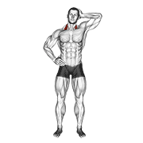
每侧2-3次 × 20-30秒
手轻加压，不拉扯
长期低头 + 屏幕偏位造成单侧提肩胛肌紧张（肩颈那块“硬结”）。
用手猛压、出现手麻即停
轻压即可，最多轻微不适，不要拉到疼
数据集原始中文分步说明
- 站直或坐直，肩膀放松。
- 将头向右倾斜，将右耳靠近右肩。
- 将右手放在头部左侧，轻轻施加压力以增加拉伸。
- 保持拉伸 15-30 秒。
- 在另一侧重复，将头向左倾斜并用左手施加压力。
- 每侧重复拉伸 2-3 次。
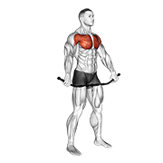
每侧2次 × 20-30秒
胸前有拉伸感即可
久坐让肩胛前引、胸小肌缩短，是“圆肩”的直接原因之一。
塌腰前倾代偿拉伸
侧身抵门框拉伸更集中
数据集原始中文分步说明
- 站直，双脚分开与肩同宽。
- 将双臂伸直至前方，与肩同高。
- 双臂交叉在身体前方，右臂放在左臂上方。
- 手指交叉并将手掌压在一起。
- 轻轻地将肩胛骨挤压在一起，然后将双手向前推，感觉胸部和肩膀前部有拉伸感。
- 保持拉伸 20-30 秒，然后放松。
- 重复所需的重复次数。
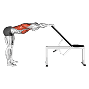
2组 × 每次20-30秒
双手扶桌面/椅背，髋向后沉，背部下压
屈髋扶物下压背阔，拉开久坐导致的背阔缩短与胸椎僵硬。
弓背下压，颈部用力使劲
扶低一点的桌面，腹肌收紧
数据集原始中文分步说明
- 站直，双脚分开与肩同宽。
- 将双臂伸直在身前，与地面平行。
- 双臂交叉在身体前方，右臂放在左臂上方。
- 手指交叉，手掌旋转远离身体。
- 慢慢抬起手臂并远离身体，感觉背部和胸部有拉伸感。
- 保持拉伸 15-30 秒，然后放松。
- 在另一侧重复。
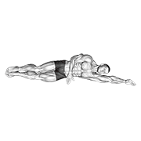
每侧2次 × 20-30秒
骨盆下沉，侧腰延展
久坐后侧腰/背阔缩短；一侧侧链拉伸可改善单侧失衡。
翻仰、臀离地
减少抬腿高度
数据集原始中文分步说明
- 侧躺，双腿伸直，下臂伸直过头顶。
- 弯曲上面的膝盖，将脚放在下面的腿前面的地面上。
- 将上臂伸过头顶，抓住稳定的东西，例如墙壁或一件家具。
- 慢慢地将下面的腿抬离地面，保持伸直，直到感觉到身体一侧有拉伸感。
- 保持拉伸 20-30 秒，然后慢慢将腿放下。
- 在另一侧重复。
左右各 2-3 次 × 20-30 秒
手臂伸直，不耸肩不前倾
久坐让背阔和体侧链紧绷，会间接拉着骨盆让腰更累；坐姿单臂上举侧伸展随时随地能放松这条链。
耸肩、手臂弯曲，或边侧弯边转腰
不侧弯，只做手臂上举的版本
数据集原始中文分步说明
- 坐在椅子边缘，双脚平放，腰背立直。
- 右手臂伸直举过头顶，掌心朝内，肩膀下沉不耸肩。
- 呼气时身体向左侧轻轻侧弯，手臂带动，感受右侧背阔和体侧的拉伸。
- 保持 20-30 秒，自然呼吸，不要前倾或转腰。
- 换左侧手臂重复。
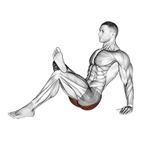
每侧2次 × 30-45秒
地面坐姿；床上版改 C12 抱膝
臀肌长期被坐“关掉”，拉伸+激活双管齐下缓解久坐后的臀部紧。
腰代偿、含胸
坐姿版：架上二郎腿前倾
数据集原始中文分步说明
- 坐在地上，双腿在身前伸展。
- 弯曲右膝，将右脚踝交叉在左大腿上。
- 将右手放在身后的地面上以获得支撑。
- 用左手轻轻按下右膝盖以加深伸展。
- 保持拉伸 30 秒到 1 分钟。
- 换边并重复。
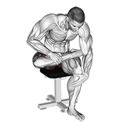
每侧2次 × 20-30秒
地面坐姿；工位做不了，改 C11
梨状肌紧张→坐骨神经牵拉感、翘腿坐造成的髋外旋失衡。
腰弯成C形
⚠ 需坐在地上，不适合工位；工位版用 C11 仰卧屈膝转体或 M06
数据集原始中文分步说明
- 坐在地上，双腿在身前伸展。
- 弯曲右膝，将右脚放在左膝外侧。
- 将左肘放在右膝外侧，轻轻地将躯干向右扭转。
- 保持拉伸 20-30 秒，然后换边重复。
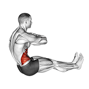
每侧6-8次
地面坐姿（腿伸直）；工位版改 M06
胸椎旋转活动度直接决定颈部与肩关节的代偿负荷。
只转颈不转胸
⚠ 数据集动画是地面盘腿/腿伸直版，工位做不了；工位版用 M06 + C08
数据集原始中文分步说明
- 坐在地上，双腿在身前伸展。
- 弯曲膝盖，将双脚平放在地面上，距离与臀部同宽。
- 将双手放在脑后，肘部朝外。
- 收紧腹肌，慢慢向右扭转躯干，将右肘拉向左膝盖。
- 扭转结束时暂停片刻，然后慢慢回到起始位置。
- 向左侧重复扭转，将左肘拉向右膝盖。
- 继续交替进行所需的重复次数。
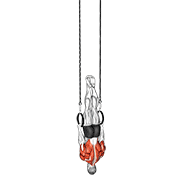
10-15次
⚠ 数据集动画实为悬吊/吊环动作，与名称不符：按文字步骤做站姿前屈，或直接用 M04
胸椎屈伸灵活 = 颈椎压力分担；每次休息都能做。
速度过快、憋气
⚠ 数据集动画（吊环悬吊）与名称不符，请按左侧文字步骤做站姿前屈，或直接做 M04
数据集原始中文分步说明
- 双脚分开与肩同宽站立，膝盖稍微弯曲。
- 将双手放在臀部或交叉放在胸前。
- 保持背部挺直，腰部慢慢向前弯曲，将上半身向地面降低。
- 在底部停顿片刻，然后慢慢抬起上半身回到起始位置。
- 重复所需的重复次数。
每侧2次 × 30秒
前脚掌踩实，髋尽量沉
一动作覆盖髋屈肌、臀、胸椎、肩，是办公人群性价比最高的一招。
后腿塌、前脚离地
手撑瑜伽砖/椅子
数据集原始中文分步说明
- 从弓步位置开始，右脚向前，左脚向后。
- 将双手放在右脚两侧的地面上。
- 将左膝降低到地面并伸展右腿，保持右脚平放在地面上。
- 向右旋转你的躯干，将你的右臂伸向天花板。
- 保持这个姿势几秒钟，然后回到起始位置。
- 换边并重复拉伸，左脚向前。
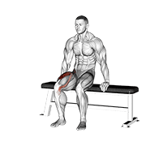
每侧2次 × 20-30秒
背贴椅背，腿伸直
髂腰肌紧→骨盆前倾→腰椎代偿性前弯。髋屈肌线拉伸是久坐者的核心课。
弓背前趴
坐高一点、胸骨向上
数据集原始中文分步说明
- 坐在椅子边缘，背部挺直，双脚平放在地面上。
- 将一只腿伸直在身前，脚跟保持在地面上。
- 稍微向前倾，感受股四头肌的拉伸。
- 保持这个姿势20-30秒。
- 换腿并重复拉伸。
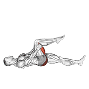
每侧2次 × 20-30秒
腿抬高，膝微屈
腘绳肌紧张与骨盆后倾/腰痛相关，仰卧位对腰更友好。
膝弯太多、没有真拉伸感
加毛巾勾脚尖
数据集原始中文分步说明
- 平躺，双腿伸展。
- 弯曲一侧膝盖，将其靠近胸部，握住大腿或小腿。
- 尽可能伸直腿，同时保持腿抬高。
- 保持拉伸 20-30 秒。
- 换另一条腿重复上述步骤。
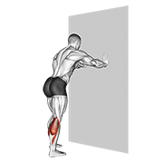
每侧2次 × 20-30秒
后脚跟不离地
长期坐姿使踝背屈受限，影响深蹲深度与小腿循环。
后脚离地、拱腰
幅度减小，收髋
数据集原始中文分步说明
- 面向墙壁站立，双脚分开与臀部同宽。
- 将双手靠在墙上，与肩同高。
- 右脚向后退一步，保持脚后跟着地，腿伸直。
- 弯曲左膝并向前倾斜，保持后腿伸直，脚后跟着地。
- 保持拉伸 20-30 秒。
- 换腿并重复拉伸。
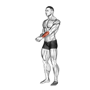
每侧2次 × 20-30秒
掌心朝下，手背轻拉
键盘/鼠标使前臂长期屈肌紧张 → 鼠标手、网球肘风险。
手腕过度背伸到痛
两侧都做
数据集原始中文分步说明
- 双脚分开与肩同宽站立，双臂在身前伸展。
- 将右臂向侧面伸出，与地面平行，手掌朝下。
- 用左手抓住右手，轻轻地将其拉向身体，感觉右前臂有拉伸感。
- 保持拉伸 15-30 秒，然后放松。
- 在另一侧重复。
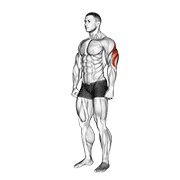
每侧2次 × 20-30秒
手肘朝上，轻拉不痛
肩后侧与肱三头紧绷，和圆肩互为因果。
手肘外翻、头前伸
坐姿亦可
数据集原始中文分步说明
- 站立或坐直，背部挺直。
- 将一只手臂伸过头顶，肘部弯曲。
- 将另一只手放在弯曲的肘部上，然后轻轻地将其拉向头部。
- 保持拉伸 15-30 秒，感受三头肌的轻微拉伸。
- 松开拉伸并在另一只手臂上重复。
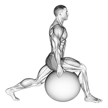
每侧2次 × 30秒
跪姿/弓步替代表同效
球上抱球比跪姿更集中拉伸髋屈肌一线（腰不塌更准）。
腰塌人前滑
跪姿弓步拉伸替代
数据集原始中文分步说明
- 将稳定球放在地上并跪在其前面。
- 将右脚放在稳定球上，膝盖弯曲成 90 度角。
- 将左腿伸到身后，保持伸直。
- 身体前倾，将臀部推向稳定球，直到感觉到右髋屈肌有拉伸感。
- 保持拉伸 20-30 秒，然后换边重复。
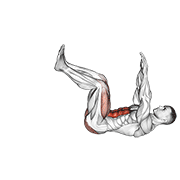
2-3组 × 每侧6-8次
节奏放慢，每侧3秒下放
抗伸展核心：训练“腰不塌”的能力，久坐腰痛首选第一步。
腰离地、憋气
减少腿伸展距离
数据集原始中文分步说明
- 平躺，双臂伸向天花板。
- 弯曲膝盖，将双腿抬离地面，使臀部和膝盖形成 90 度角。
- 接合你的核心和下背部，将你的下背部压入地面。
- 慢慢地将右臂和左腿放低至地面，保持它们伸直并悬停在地板上方。
- 暂停片刻，然后回到起始位置。
- 用左臂和右腿重复该动作。
- 继续交替进行所需的重复次数。
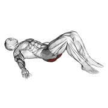
2-3组 × 12-15次
顶峰挤压2秒
臀大肌是久坐最先“失联”的肌肉，臀桥是恢复髋伸展能力的入门。
用腰顶、膝内扣
脚跟靠近臀部
数据集原始中文分步说明
- 平躺，膝盖弯曲，双脚平放在地上。
- 将手臂放在身体两侧，手掌朝下。
- 启动臀肌和核心肌群，然后将臀部抬离地面，直到身体从膝盖到肩膀形成一条直线。
- 在顶部暂停片刻，挤压臀部。
- 慢慢地将臀部放回起始位置。
- 重复所需的重复次数。
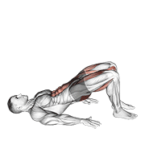
2组 × 每侧6-8次
骨盆保持水平，不塌臀
单腿稳定+骨盆控制，直接对应久坐后的骨盆前倾与腰痛。
骨盆下沉、腰部代偿
单腿臀桥（不做行进）
数据集原始中文分步说明
- 平躺，膝盖弯曲，双脚平放在地上。
- 收紧臀部并将臀部抬离地面，从膝盖到肩膀形成一条直线。
- 在保持臀部抬起的同时，将一只脚抬离地面，并将膝盖靠近胸部。
- 将脚放回地面，然后用另一条腿重复该动作。
- 继续交替双腿进行行进动作，同时保持桥式姿势。
- 重复所需的重复次数。
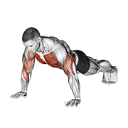
2-3组 × 每侧8-10次
腰不塌陷，臀不晃动
抗旋转核心 + 肩胛稳定；改善长期含胸的动力链。
臀部左右摇摆
跪姿版（C05）
数据集原始中文分步说明
- 从高平板支撑位置开始，双手直接放在肩膀下方，身体呈一条直线。
- 启动你的核心并将右手抬离地面，伸手拍打你的左肩。
- 将右手放回地面，然后用左手轻拍右肩，重复此操作。
- 继续交替轻拍肩膀，同时保持臀部和躯干稳定。
- 重复所需的重复次数。
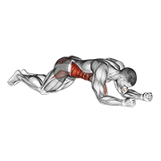
2-3组 × 每侧8-10次
先退阶选择，稳定>次数
比标准平板更易保持质量，适合刚开始的训练者。
耸肩、腰塌
膝盖着地触肩
数据集原始中文分步说明
- 从跪姿开始，双手放在地上，与肩同宽。
- 将双腿伸到身后，用脚趾支撑，将身体抬起成平板支撑姿势。
- 保持核心参与并保持臀部稳定，将一只手抬离地面并拍打另一侧的肩膀。
- 将手放回地面并用另一只手重复此操作。
- 继续交替进行所需的重复次数。
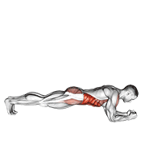
2组 × 每侧6次
旋转时髋不跟着转
胸椎旋转+核心抗旋转，改善“腰替胸转”的僵硬感。
髋部随转、塌腰
先做跪姿版
数据集原始中文分步说明
- 从高平板支撑位置开始，双手直接放在肩膀下方，身体从头到脚成一条直线。
- 调动你的核心和臀部以保持稳定的位置。
- 将躯干向右旋转，抬起右臂并向天花板延伸。
- 扭转时保持臀部和腿部稳定。
- 保持片刻，然后回到起始位置。
- 在左侧重复扭转。
- 继续交替进行所需的重复次数。
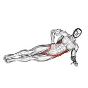
2组 × 每侧20-30秒
肩肘正对，身体一条直线
侧腹/腰方肌 + 髋外侧稳定，缓解久坐造成的腰侧酸胀。
肩膀前倾、肘不垂直
膝盖弯曲的侧桥
数据集原始中文分步说明
- 侧躺，双腿伸展并叠放在一起。
- 将前臂放在肩膀正下方的地面上，肘部弯曲成 90 度角。
- 启动你的核心并将臀部抬离地面，从头到脚形成一条直线。
- 保持此位置所需的时间。
- 将臀部放低至起始位置。
- 在另一侧重复。
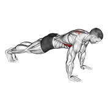
2组 × 10-12次
只动肩胛，肘微屈不变
前锯肌控制肩胛，是“圆肩-耸肩-颈痛”链条的上游开关。
肘弯曲、低头
站在墙前做更轻松
数据集原始中文分步说明
- 从高平板支撑位置开始，双手直接放在肩膀下方，身体呈一条直线。
- 将胸部压向地面，保持肘部靠近身体。
- 当你下降时，将肩胛骨挤压在一起并将胸部向前推。
- 在底部停顿片刻，然后推回到起始位置。
- 重复所需的重复次数。
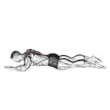
2组 × 20-30秒
颈部中立，不抬头看天
温和的胸椎伸展，对抗久坐带来的“驼背弯曲”。
抬头、腰先塌
前臂支撑降低强度
数据集原始中文分步说明
- 面朝下躺在地上，前臂平放在地板上，肘部直接位于肩膀下方。
- 收紧核心肌群，将胸部抬离地面，将前臂和脚趾保持在地板上。
- 保持这个姿势几秒钟，确保颈部保持在中立位置。
- 慢慢地将胸部放回起始位置。
- 重复所需的重复次数。
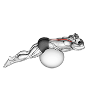
2组 × 10-12次
抬到水平即可，逐节抬起
背伸肌耐力训练；久坐者背伸肌疲劳是腰痛的常见底层原因。
速度过快、超过水平
减少幅度
数据集原始中文分步说明
- 将稳定球放在地面上，面朝下躺在上面，臀部放在球上，双脚靠在墙壁或其他稳定的表面上。
- 将双手放在脑后或交叉在胸前。
- 启动你的核心，慢慢地将你的上半身抬离球，伸展你的背部，直到你的身体从头部到脚后跟形成一条直线。
- 在顶部停顿片刻，然后慢慢将上半身放回起始位置。
- 重复所需的重复次数。
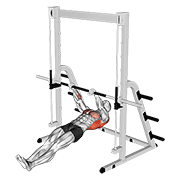
3组 × 8-12次
胸碰杠，肩胛收紧
拉类动作：纠正“拉多于推”的比例，强化中背与后链。
耸肩、头前伸
屈膝版（S02），或借助高杠
数据集原始中文分步说明
- 在腰部高度设置一个杠铃或使用悬挂训练器。
- 面向杠铃或悬吊训练器站立，双脚分开与肩同宽。
- 正手握住杠铃或手柄，握距略宽于肩宽。
- 向后倾斜，保持身体挺直，脚后跟着地。
- 将胸部拉向杠铃或手柄，将肩胛骨挤压在一起。
- 在顶部停顿片刻，然后慢慢降低回到起始位置。
- 重复所需的重复次数。
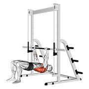
3组 × 10-12次
固定方式时选它
比直腿反式划船更易完成，适合桌边或杠下做。
身体不直、腰代偿
单脚离地增加难度
数据集原始中文分步说明
- 在腰部高度设置一根横杆，然后躺在其下方。
- 正手握住杠铃，握距略宽于肩宽。
- 调整身体位置，使脚后跟着地，身体伸直。
- 将肩胛骨挤压在一起，将胸部向上拉向杠铃。
- 在顶部停顿片刻，然后慢慢将身体放回起始位置。
- 重复所需的重复次数。
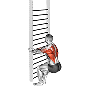
3组 × 10-12次
蹲姿拉，背不弓
同时练蹲+拉，用自身体重+门框/稳固家具即可。
弓背、膝内扣
换成更高位的反式划船
数据集原始中文分步说明
- 双脚分开与肩同宽站立，伸直手臂抓住坚固的物体或悬挂训练器。
- 将身体降低至蹲姿，保持背部挺直，膝盖位于脚趾后面。
- 从蹲姿开始，将身体向上拉向物体或悬挂训练器，将肩胛骨挤压在一起。
- 在顶部停顿片刻，然后慢慢将身体放回起始位置。
- 重复所需的重复次数。
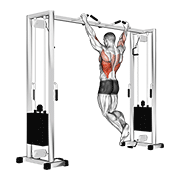
3组 × 3-8次或更多
能做几个做几个，或改辅助
拉类最能对抗圆肩：背阔+中背+握力。
半程、耸肩
辅助引体或弹力带下拉
数据集原始中文分步说明
- 用中立握法（手掌相对）悬挂在引体向上杆上，双臂完全伸展。
- 启动你的核心并将肩胛骨挤压在一起。
- 弯曲肘部并将肘部向下推向臀部，将身体向上拉向杠铃。
- 继续拉，直到下巴位于杠铃上方。
- 在顶部停顿片刻，然后有控制地慢慢将身体放回起始位置。
- 重复所需的重复次数。
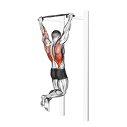
3组 × 3-8次或更多
起始位先沉肩
同上，正握对背阔激活更强；做不到就先用辅助。
摆动借力
用弹力带辅助
数据集原始中文分步说明
- 悬挂在引体向上杆上，手掌背向自己，手臂完全伸展。
- 启动你的核心并将肩胛骨挤压在一起。
- 弯曲肘部并将胸部拉向杠铃杆，将身体向上拉向杠铃杆。
- 在动作的最高点暂停，然后慢慢降低身体回到起始位置。
- 重复所需的重复次数。
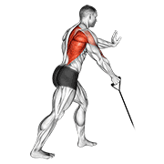
3组 × 每侧12-15次
肘贴身拉向腰
一根弹力带就能完成最高效的“拉”动作（办公室可做）。
靠腰拉、肘离开体侧
换轻一点的带
数据集原始中文分步说明
- 将带子固定在腰部高度的稳定锚点上。
- 面向锚点站立，双脚分开与肩同宽。
- 用一只手握住弹力带，手掌朝内，然后后退以在弹力带中产生张力。
- 稍微弯曲膝盖，髋部向前转动，保持背部挺直。
- 将带子拉向腰部，将肩胛骨挤压在一起。
- 在动作的最高点暂停片刻，然后慢慢松开弹力带回到起始位置。
- 重复所需的重复次数，然后换边。
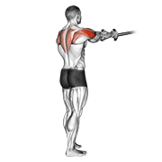
3组 × 12-15次
顶峰夹肩胛2秒
中背/后三角，专门对抗前引肩胛和肩胛间酸痛。
弯曲手肘借力
用较轻阻力
数据集原始中文分步说明
- 将带子固定在胸部高度的固定物体上。
- 双脚分开与肩同宽站立，双手握住弹力带放在身前。
- 保持手臂伸直并将其向两侧抬起，直到与地面平行。
- 在动作的最高点将肩胛骨挤压在一起。
- 慢慢地将手臂放回起始位置。
- 重复所需的重复次数。
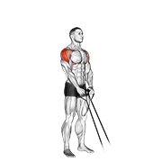
3组 × 12-15次
拇指朝上，宁轻勿重
下斜方肌+Y 字：改善“头前伸+耸肩”体态的关键小节。
耸肩提起、重量太大
用无阻力开始
数据集原始中文分步说明
- 双脚分开与肩同宽站立，将弹力带放在大腿前面，手掌朝内。
- 保持双臂伸直，将其向上举至两侧，与身体形成“Y”形。
- 在动作的最高点将肩胛骨挤压在一起。
- 慢慢地将手臂放回起始位置。
- 重复所需的重复次数。
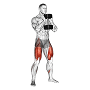
3-4组 × 8-12次
12-20kg，膝追脚尖
下肢大肌群首选：一次覆盖臀腿、负重小、膝腰友好。
膝内扣、脚跟离地
扶门框做自重深蹲
数据集原始中文分步说明
- 双脚分开与肩同宽站立，双手握住哑铃垂直放在胸前。
- 保持胸部挺直，核心收紧，通过向后推臀部并弯曲膝盖，将身体降低至蹲姿。
- 继续降低，直到大腿与地面平行，或者尽可能低。
- 在底部停顿片刻，然后推动脚后跟回到起始位置。
- 重复所需的重复次数。
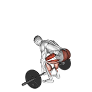
3组 × 5次
轻重量先学髋铰链，背永远中立
学习髋铰链、练后链（臀腿+背），是预防下背痛最重要的动作模式。
弓背、用腰拉
用空杆或哑铃做髋铰链
数据集原始中文分步说明
- 双脚分开与肩同宽站立，杠铃放在你面前的地面上。
- 弯曲膝盖并以臀部为铰链，降低躯干，正手握住杠铃，双手分开略宽于肩宽。
- 当你通过脚后跟将杠铃抬离地面时，保持背部挺直，胸部抬起，伸展臀部和膝盖。
- 当你站直时，挤压你的臀部并保持你的核心参与。
- 弯曲臀部和膝盖，将杠铃放回地面，保持背部挺直。
- 重复所需的重复次数。
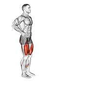
3组 × 每侧8-10次
前膝对脚尖，后膝下沉
单腿+髋伸展，改善久坐后的髋屈肌缩短与前侧力量差。
前膝超过脚尖很多、后膝砸地
后退步弓步
数据集原始中文分步说明
- 站立，双脚分开与臀部同宽，双手放在臀部。
- 右脚向前迈出一大步，将身体降低到弓步位置。
- 将右膝盖弯曲约 90 度，保持膝盖与脚踝对齐。
- 用右脚推出并返回到起始位置。
- 用左腿重复上述动作，交替进行所需的重复次数。
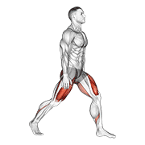
3组 × 每侧8-10次
后脚搭沙发，前腿承重
分腿蹲=久坐者“髋屈肌拉伸+髋伸展力量”结合体。
后脚太高、前脚不稳
先靠墙扶做
数据集原始中文分步说明
- 双脚分开与肩同宽站立。
- 一只脚向前迈出一步，并将其放在另一只脚前面约两英尺处。
- 弯曲膝盖和臀部，降低身体，保持背部挺直。
- 继续降低，直到前大腿与地面平行，后膝盖悬停在地面上方。
- 暂停片刻，然后推动前脚跟回到起始位置。
- 重复所需的重复次数，然后换腿并重复。
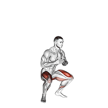
3组 × 8-10次
轻落地，膝不内扣
爆发力动作以维持快肌纤维与骨密度。
落地重、膝内扣
去掉跳跃，做快节奏深蹲
数据集原始中文分步说明
- 双脚分开与肩同宽站立。
- 弯曲膝盖并将臀部向后推，将身体降低至蹲姿。
- 爆发性地跳离地面，伸展臀部、膝盖和脚踝。
- 在半空中时，快速将手臂向前伸以保持平衡。
- 脚掌轻轻落地，然后立即进入下一个重复动作。
- 重复所需的重复次数。
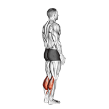
3组 × 15-20次
顶峰停1秒，慢下
久坐者下肢循环与踝跖屈力量偏弱，提踵还能顺带促进血流。
弹震、只做半程
坐姿或扶墙
数据集原始中文分步说明
- 双脚分开与肩同宽站立，脚趾指向前方。
- 将手放在墙壁或稳定的表面上以保持平衡。
- 慢慢地将脚后跟抬离地面，将身体重量转移到脚掌上。
- 在顶部停顿片刻，然后慢慢降低脚后跟回到起始位置。
- 重复所需的重复次数。
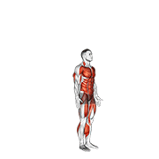
3组 × 30秒
可控速度，不追次数
短时高效心肺，降低久坐带来的代谢与心血管风险。
动作过快导致腰部塌陷
去掉俯卧撑环节
数据集原始中文分步说明
- 从站立位置开始，双脚分开与肩同宽。
- 弯曲膝盖并将双手放在身前的地板上，将身体降低至蹲姿。
- 将脚踢回到俯卧撑位置。
- 进行俯卧撑，保持身体呈一条直线。
- 将双脚跳回蹲姿。
- 爆发性地跳起，将双臂举过头顶。
- 轻轻落地并立即回到蹲姿，开始下一次重复。
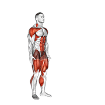
3组 × 40-60秒
前脚掌落地，轻
最简单的低门槛心肺刺激，休息间隙 2 分钟就能提升心率。
脚砸地、腰部不直
原地踏步
数据集原始中文分步说明
- 双脚并拢站立，双臂放在身体两侧。
- 跳起来，分开双脚，将手臂举过头顶。
- 当你落地时，迅速跳回起始位置。
- 重复所需的重复次数。
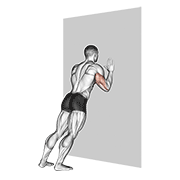
3组 × 12-15次
身体一条直线，肩胛微收
推类退化版本：无器械也能练胸/肩，抗圆肩。
塌腰、头前伸
身体离墙更近
数据集原始中文分步说明
- 面向墙壁站立，距离大约一臂距离。
- 将双手放在墙上，与肩同高，距离略宽于肩宽。
- 后退几英尺，保持身体挺直，双脚分开与臀部同宽。
- 弯曲肘部，将胸部向墙壁降低，保持身体呈一条直线。
- 推回起始位置，伸直手臂。
- 重复所需的重复次数。
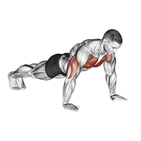
3组 × 6-12次
标准做不满就退回墙式/跪姿
标准推类动作，平衡“拉”的比例，强化胸肩三头。
塌腰、肘过度外展
用墙式或跪姿
数据集原始中文分步说明
- 从高位平板支撑开始，双手分开略宽于肩宽，双脚并拢。
- 弯曲肘部，调动核心力量，将身体压向地面，保持身体呈一条直线。
- 当你的胸部刚好高于地面时，暂停片刻，然后伸直手臂，将自己推回起始位置。
- 重复所需的重复次数。
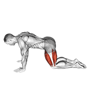
每侧30-40秒
髋向后移，尾骨微内卷，腰不塌
久坐（且大腿被椅面压住）让股直肌/股四头紧绷→骨盆前倾、腰前弯代偿；跪姿拉伸对腰零压力。
腰塌下去、髋往前顶
膝下垫毛巾，幅度以不痛为准
数据集原始中文分步说明
- 从四肢着地开始，双手直接放在肩膀下方，膝盖直接放在臀部下方。
- 将一条腿向后伸直，保持膝盖弯曲和脚弯曲。
- 慢慢地将臀部降低到地面，感觉股四头肌的伸展。
- 保持这个姿势20-30秒。
- 换腿并在另一侧重复拉伸。
每侧30-45秒
膝并拢，落地不硬砸；腰痛期幅度减半
仰卧屈膝转体是腰背酸痛时最安全的“骨盆-胸椎松解”：放松腰方肌/臀与椎旁肌，比坐姿扭转对腰椎压力更小。
双膝离开、用力甩到地上
膝只转到不痛的一半
数据集原始中文分步说明
- 平躺，膝盖弯曲，双脚平放在地上。
- 将手臂向两侧伸展，与身体垂直。
- 保持膝盖并拢，慢慢地将它们降低到一侧，旨在用膝盖接触地面。
- 暂停片刻，然后启动核心并慢慢将膝盖抬回到起始位置。
- 到另一侧重复该动作。
- 继续交替进行所需的重复次数。
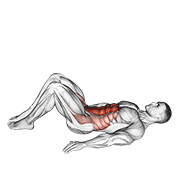
2组 × 8-10次
收肋骨起身，不用脖子/腰发力
臀腿+下腹协同的温和髋抬，让腰在受控产力中放松，比依赖腰部起身更安全。
耸肩用脖子发力、腰先塌
只抬到肩髋膝一线，不追求高度
数据集原始中文分步说明
- 平躺，膝盖弯曲，双脚平放在地上。
- 将双手放在身体两侧，掌心朝下。
- 收紧核心肌群和臀肌，然后将臀部抬离地面，直到身体从膝盖到肩膀形成一条直线。
- 在顶部暂停片刻，然后慢慢将臀部放回起始位置。
- 重复所需的重复次数。